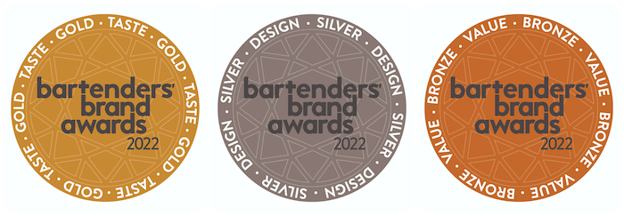

Барманството е занаят с богата история, датираща от 3500 г. пр.н.е., еволюирайки от обикновено наливане до сложни творения.
Почитаме уменията, отдадеността и креативността на барманите по целия свят, които превръщат всяка напитка в истинско изживяване. Нека вдигнем чаши за майсторите зад бара днес!
Наградите Bartender Spirits Awards се оценяват от бармани, купувачи на алкохолни напитки в заведения и мениджъри на барове.
Състезанието предоставя независими и честни отзиви за марки, които искат да навлязат в индустрията за алкохолни напитки.
Организатор на събитието е Beverage Trade Network, водеща онлайн платформа, посветена на свързването на световната индустрия за напитки.
